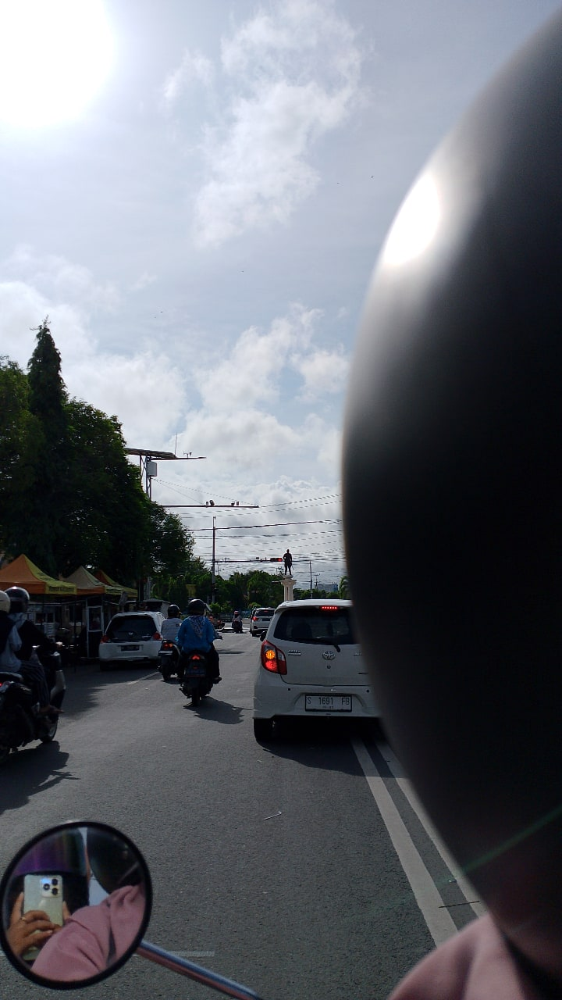
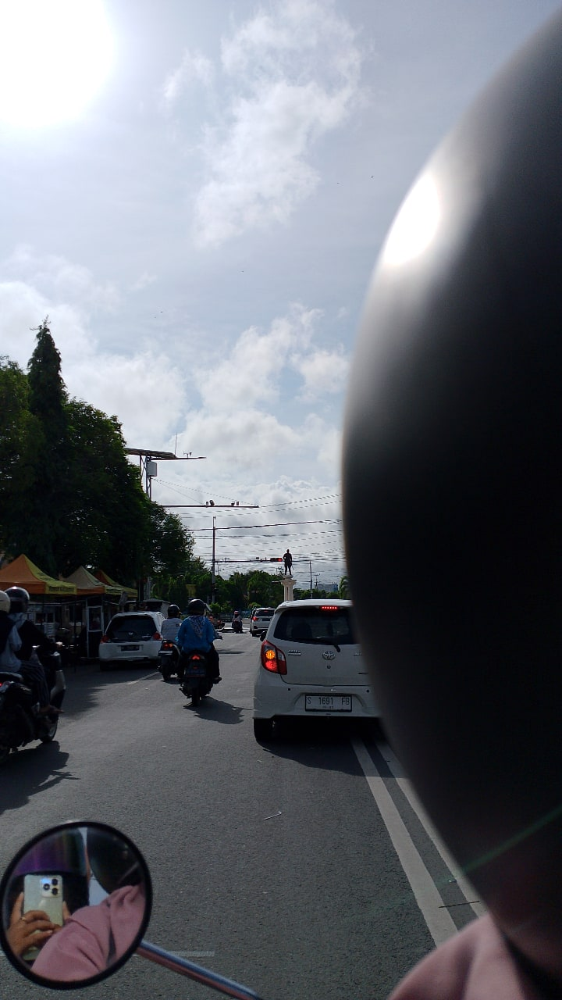
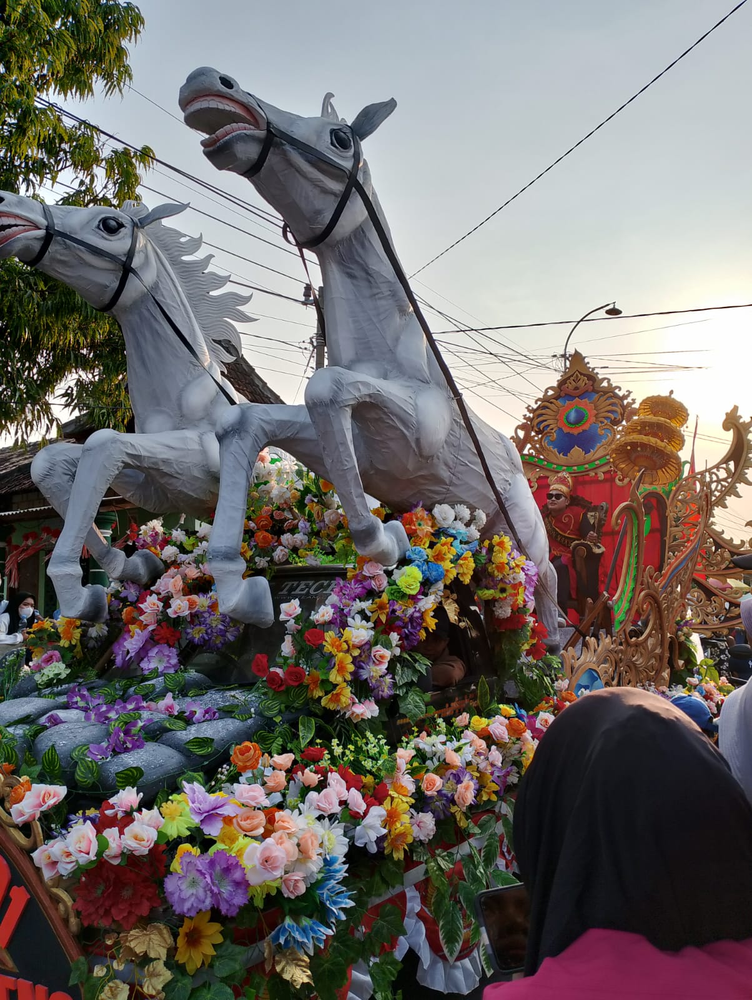
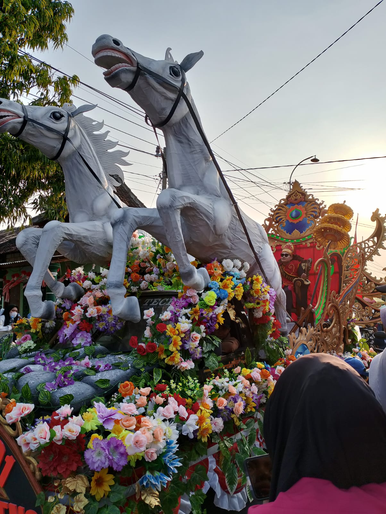

Hobi
Selamat datang di halaman Hobi Pribadi saya! Saya percaya bahwa hobi adalah bagian penting dalam hidup, karena memberikan keseimbangan, kebahagiaan, dan inspirasi di luar rutinitas sehari-hari. Di sini, saya akan berbagi beberapa hobi yang saya tekuni dan mengapa mereka sangat berarti bagi saya.
- Fotografi
 

 

Fotografi adalah hobi yang memungkinkan saya untuk menangkap momen-momen indah dalam hidup. Saya senang memotret pemandangan alam atau momen keseharian. Melalui lensa kamera, saya bisa melihat dunia dari perspektif yang berbeda dan mengabadikan keindahan yang mungkin terlewatkan oleh mata biasa. Fotografi juga mengajarkan saya untuk lebih menghargai detail kecil dalam kehidupan.
- Memasak

Memasak adalah salah satu hobi yang tidak hanya menyenangkan, tetapi juga sangat bermanfaat. Bagi saya, memasak bukan sekadar kegiatan harian, melainkan cara untuk mengekspresikan kreativitas dan menciptakan sesuatu yang bisa dinikmati oleh orang lain. Dalam memasak, saya menemukan kebahagiaan, tantangan, dan rasa kepuasan tersendiri. Dan untuk dokumentasi memasak sendiri bisa diliat di bagian menu masakan. Atau klik link lihat selengkapnya.